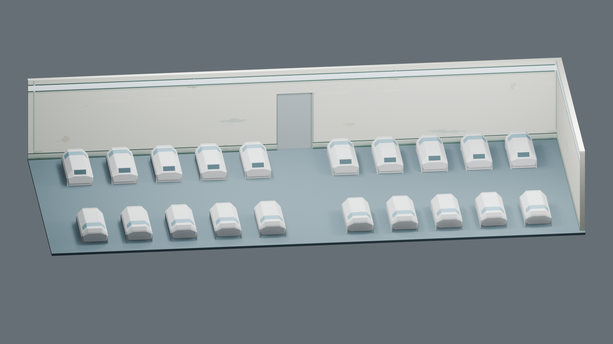
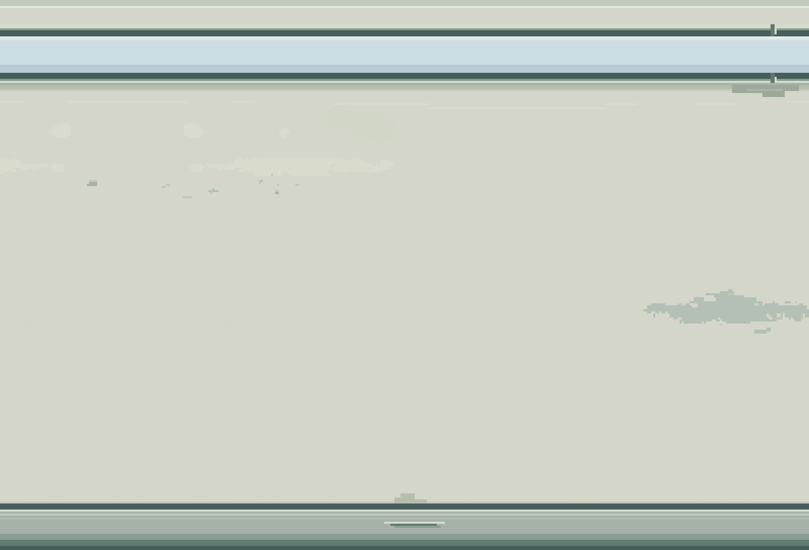
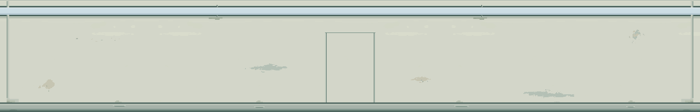

Room 1 / 墙面 v2
22.5cm宽照明带 · 低饱和灰蓝白 · 集成灯槽与金属护带 · 更清楚的材料历史。保留暖象牙白墙面和连续表面，具体效果等待审图。
v1 / v2：同镜头
灯色比较：相同尺寸／镜头／强度
灰蓝白 #CCDDE4 · 接近白的淡蓝柔和白光 #EAEBDF
正面近景：淡蓝 / 白光
低角度

原生材料像素 / 最近邻3倍

后墙连续展开

当前比较材质颜色与自发光；仍使用原审查照明，向人物和地面投光尚未实现。PixelLab Pro实际使用15次订阅额度；白光对照只改材质参数，没有再次生成。